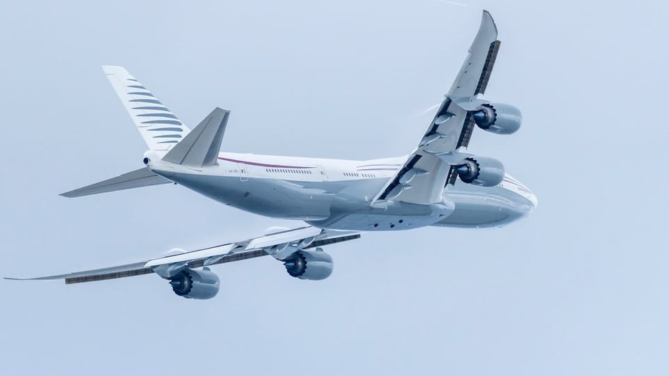

世界苦茶05月12日新闻 | 35条 | 泽连斯基将周四直接与普京会谈

泽连斯基将周四直接与普京会谈 | 中美完成第一轮贸易谈判 | 教宗强调AI是世界巨大挑战 | 特朗普将违宪接受卡塔尔礼物
透明茶室
苦茶数据
美元兑人民币：7.22（昨日7.24，前日7.24）
美元兑日元：146.05（昨日144.98，前日145.59）
上证指数：3360（昨日3342，前日3342）
标普500指数：休市（昨日5659，前日5663）
比特币：103917（昨日103477，前日103432）
布伦特原油：64.29（昨日63.91，前日63.20）
中国新闻
• 中拉论坛将通过合作文件 ：中国－拉美和加勒比国家共同体论坛第四届部长级会议将通过《北京宣言》和共同行动计划两份成果文件。据中国央视新闻报道，本届会议5月13日将在北京举行，中国外交部部长助理苗得雨星期天介绍有关情况。苗得雨说，本届会议将通过《北京宣言》和共同行动计划两份成果文件。《宣言》将展现中拉双方在求和平、谋发展、促合作方面的坚定决心；共同行动计划涉及双方在科技创新、经贸投资、金融、基础设施、农业粮食、工业信息化、能源发展，以及共建“一带一路”等领域合作的具体举措，将指导未来三年中拉整体合作。
• 美西岸港口现中国船空缺 ：美国西岸港口官员在当地时间星期五早上告诉美国媒体，过去12个小时没有一艘从中国出发的货船向美国西岸两个主要港口运送货物。这是自疫情爆发以来从未发生过的情况。美国有线电视新闻网报道，六天前有41艘船预定从中国出发前往圣佩德罗湾港区，这个港区包含加州洛杉矶港和长滩港，但到了星期五这一数字为零。总统特朗普的贸易战上个月对大多数中国进口产品征收巨额关税，导致海上船只数量和运往美国港口的货物也减少。报道称，对许多美国企业来说，与中国做生意的成本如今过于高昂。 （翻评：真正的经济脱钩。）
• 渤海黄海执行军事禁航任务 ：中国将在渤海海峡黄海北部执行军事任务，禁止船只驶入。据中国海事局网站消息，大连海事局星期五发布航行警告“军事任务——辽航警128/25”。航行警告显示，5月11日16时至6月1日16时，渤海海峡黄海北部部分海域执行军事任务，禁止驶入。
• 台立委称印巴冲突具启示性 ：台湾民进党立法委员陈冠廷认为，不久前爆发的印巴冲突不仅是区域冲突，更是中国大陆与西方武器对抗的检验，对台湾安全具有重要启示。综合台湾中央广播电台和《太报》报道，陈冠廷星期五针对巴基斯坦战机击落至少两架印度军机的消息，作出上述评论。路透社引述匿名美国官员报道，高度确信巴基斯坦使用中国制造的歼-10战机，向印度战斗机发射空对空导弹，击落至少两架印度战机。另一名官员称，在被击落的印度战机中，有至少一架是法国制造的阵风战斗机。
• 中美官员瑞士继续会谈 ：美中两国高级官员星期天在瑞士日内瓦再次会面。路透社引述知情人士报道上述信息。此次会谈旨在化解可能重创全球经济的贸易战。法新社则引述瑞士媒体报道，根据消息人士的说法，第二天闭门会谈在当地时间星期天早上10时开始。中国副总理何立峰、美国财长贝森特和贸易代表格里尔出席此次会谈。
亚太印太新闻
• 卢秀燕或参选国民党主席 ：台湾政治立场亲蓝的媒体报道，台中市长卢秀燕拟在罢免三阶投票前表态参选国民党主席。中时新闻网星期天报道，检调侦办罢免民进党立委涉死亡连署案，开搜蓝营各地党部，羁押包括国民党台北市党部主委黄吕锦茹在内等多位县市操盘手，外界忧心国民党恐有灭党之危。不过，一名不具名的蓝营重要人士透露，检调小案大办，却意外替陷入僵持的国民党主席之争带来解套契机，卢秀燕不排除在罢免国民党立委投票前，举“全党危急存亡”大旗，表态选党主席。 （翻评：国民党外患未除，内部现在又开始争权了。）
• 陈椒华宣布退出时代力量 ：台湾前时代力量立委陈椒华宣布退党，时代力量回应称，尊重陈椒华的个人选择。综合《上报》和ETtoday报道，陈椒华星期六宣布，在征求家人同意下，寄出了退出时代力量党籍的声明书。陈椒华称，她曾经身为时代力量党公职及干部，在卸任立委职务及党务一年后，认为放弃党员身份会让自己有更多空间去做对台湾有益的事务。 （翻评：我觉得这个人要参加民众党了。）
• 台湾官网删除“汉人”表述 ：台湾行政院官网“国情简介”族群栏目内容进行修改，“汉人”一词被删掉，现改成：“目前已设户籍人口2.6％为原住民族群，另外来人口占1.2％，其余人口占96.2％。”行政院官网资料显示，上述栏目所注明的日期为今年3月24日。综合台湾《联合报》《太报》和中时新闻网报道，原来的表述是：“台湾目前已设户籍人口组成以汉人为最大族群，占总人口96.4%。”台湾网民是在星期六发现有文字修改。
• 台陆配游行抗议补件政策 ：台湾的大陆籍配偶上街游行，要求政府放宽现行补件规定。综合中时新闻网和《上报》报道，此次挺陆配游行由更生党与新党发起，于星期六下午3时正式启程，路线自中正纪念堂出发，行经信义路、林森南路、济南路，最终抵达立法院群贤楼前。主办团体主张，陆配多年落地生根，如今却被突袭式要求补交丧失原籍证明，有人返陆奔波11天却无法办理，原因是当地户政单位已被整并，实务上难以配合。
• 韩国生育意愿上升趋势现 ：韩国当局公布的数据显示，过去三年，新生儿数量持续减少，但公众结婚意愿有所上升，显示韩社会婚育观出现微妙变化。韩联社报道，保健社会研究院星期天发布“2024年家庭和生育”报告，该项调查面向19岁至49岁成年人口共1.4372万人；结果显示，女性平均生育子女数为0.85人，较三年前减少0.18人，呈明显下降趋势。在有配偶的受访者中，仅有18%表示有生育计划，平均期望子女数为1.25人。在没有配偶的受访者中，63.2%表示未来有生育意愿，平均期望子女数为1.54人，略高于有配偶者。
• 韩国国民力量爆换将风波 ：韩国总统大选候选人登记截止前夕，执政党国民力量党突发“换将”风波。国民力量党宣布撤销党内初选胜出的金文洙的总统候选人资格，转而支持新入党的前总理韩悳洙，结果遭党员投票否决。金文洙最终保住国民力量党总统候选人身份。金文洙星期六深夜发声明说，他会立即组建紧急对策委员会，搭建“全民大帐篷”，建立坚固的反李在明战线，全力迎战大选。李在明是在野的共同民主党总统候选人。韩悳洙阵营则说，“虚心接受国民与党员的选择”，感谢外界的关注、支持与批评，并祝愿金文洙与国民力量党取得胜利。
• 俾路支武装分子攻占卡拉特市，在俾路支省各地发动39次袭击： 俾路支解放军周六宣布，其精锐部队“法塔赫小队”已控制俾路支省卡拉特区的芒戈查尔市，此前他们采取了一系列激烈的行动，包括封锁卡齐奈高速公路和暂时拘留当地警察。该组织在一份声明中表示，被捕的警察现已获释。俾路支解放军自称是反对巴基斯坦占领的自由运动组织，并将此次行动描述为在俾路支省各地发动的更广泛、更协调的攻势的一部分。
科技新闻
• OpenAI与微软重谈合作协议 ：OpenAI 和微软正在重新修订其数十亿美元合作协议的条款，这是一场高风险的谈判，旨在允许 ChatGPT 开发商未来进行 IPO。此次谈判的一个关键问题是，已经投资超过 130 亿美元的微软将获得重组后集团的多少股权。据多位了解谈判情况的人士透露，双方还在修改有效期至2030年的首份合同，涵盖微软对OpenAI知识产权的使用权，以及产品销售的收入分成。微软愿意放弃其在OpenAI新营利性业务中的部分股权，以换取其在2030年之后开发的新技术的使用权。
• 教宗利奥十四提AI新挑战 ：当教皇利奥十四世在向枢机主教团发表讲话时阐述了他对教皇职位的愿景，他也解释了其为何选择这个教皇名号。令人难以置信的是，AI在其中发挥了重要作用。在梵蒂冈对他演讲的翻译中，教皇利奥十四世解释称他的名号参考了曾在工业革命初期领导教会的教皇利奥十二世。……我选择使用利奥十四世这个名号。这有不同原因，但主要因为教皇利奥十三世在其历史性通谕《新事》中，在第一次伟大工业革命的背景下探讨了社会问题。在我们这个时代，教会向所有人提供其社会训导的宝库，以应对另一场工业革命和人工智能领域的发展，这些发展为捍卫人类尊严、正义和劳动权益带来了新的挑战。
• 韩核电成最大电力来源 ：据韩国产业通商资源部周日发布的2024能源供需动向资料，去年发电总量 595.6 亿千瓦时，其中核电发电量 188.8 亿千瓦时，占比 31.7% ，位居第一。天然气和煤炭发电量分别为167.2亿千瓦时，占比28.1%，共同位居第二。煤炭发电量自2007年之后，近17年来一直是国内最大的发电能源。但随着环保政策基调的扩大和核电利用度的提高，核电替代煤炭成为最大发电能源。可再生能源发电量63.2亿千瓦时，同比增长 11.7%，在发电总量中占比首次突破两位数，达 10.6%。韩国产业部解释，以太阳能光伏发电为主的设备扩大、能源发电环境改善、投资积极等对可再生能源发电量提升产生影响。
• 欧洲对撞机将铅转为黄金 ：欧洲核子研究中心的物理学家们使用大型强子对撞机实现了十七世纪炼金术士的梦想 —— 成功地将铅变成了黄金，尽管时间只有几分之一秒，而且成本高昂。耗资数十亿美元的LHC每次实验都会将接近光速的铅离子束对准撞击在一起，这些离子偶尔会擦肩而过，而不是迎面相撞。这时，离子周围的强电磁场会产生能量脉冲，触发迎面而来的铅原子核射出三个质子，将其变成金原子核。通过分析 LHC 的ALICE检测器数据，在2015年至2018年期间LHC的碰撞产生了860亿个金原子核，约重29万亿分之一克。大多数不稳定、快速移动的金原子在撞击实验装置或分裂成其他粒子前，会持续大约1微秒。
财经新闻
• 中美达成经贸会谈共识 ：中美双方在瑞士日内瓦举行经贸高层会谈后宣布取得了实质性进展。中方代表团表示，双方就彼此关心的经贸问题开展了深入交流。会谈氛围是坦诚的、深入的、具有建设性的，取得了实质性进展，达成了重要共识。双方一致同意建立中美经贸磋商机制，明确双方牵头人，就各自关切的经贸问题开展进一步的磋商。中美双方将尽快敲定有关的细节，并且将于5月12日发布会谈达成的联合声明。美国财政部长贝森特表示，双方取得实质性进展，会谈富有成效。美国贸易代表格里尔称，协议有助于解决造成国家紧急状态的巨额贸易逆差。他认为如此快达成协议可能反映出双方差异并没有想象中那么大。中国国务院副总理何立峰说，经过中美双方的共同努力，会谈富有成效，迈出了通过平等对话协商解决分歧的重要一步，为进一步弥合分歧和深化合作打下了基础、创造了条件。
• 特朗普推动印巴经贸合作 ：美国总统特朗普在他的社交媒体Truth Social发文说，他将扩大与印度和巴基斯坦的贸易往来。路透社报道，特朗普星期六晚发文说：“我将与印度和巴基斯坦合作，看能否在经历‘1000年’之后，为克什米尔问题找到解决方案。”同日早些时候，印度和巴基斯坦的军事冲突持续数日后峰回路转，特朗普宣布，印巴两国已同意“立即全面停火”。印度和巴基斯坦随后证实了这个消息。
• 宁德时代拟限制美投资者 ：全球最大电动汽车电池制造商宁德时代据报计划针对参与香港上市计划的美国投资者类型设限。彭博社报道，这表明中美关系紧张情况可能正蔓延至首次公开募股市场。不愿具名的知情人士上周告诉彭博社，公司决定将股票出售方式仅改为所谓的Reg S发行，即不允许面对美国境内投资者的股票出售，并且免除发行人的某些美国监管备案义务。
• 英美协议或排除中国供应链 ：英美两国贸易协议据报将挤压中国供应链。英国接受美国在钢铁和制药行业提出的严格安全要求，外交官们认为，美国可能以此作为将中国排除在其他国家战略供应链之外的模板。英国《金融时报》报道，英美两国贸易协议，为上述两个行业提供关税减免，但条件是英国努力迅速满足美国对供应链安全和相关生产设施所有权的要求。英国官员称，该规定适用于一些第三国，但坦言美国总统特朗普已暗示，中国是其预定目标。
• 多地开展现房销售试点 ：中国多省市已开展现房销售试点，去年全国现房销售面积占比超30%。据澎湃新闻报道，从地方试点来看，海南是中国首个省级出台现房销售政策的省份。2020年3月，中共海南省委办公厅、省政府办公厅印发通知，规定新出让土地建设的商品住房实行现房销售制度。北京自2021年起，在集中土拍中持续扩大现房销售试点范围。深圳也于2023年8月重启现房销售的探索，打破了自2016年以来的空白。
• 石破茂主张取消对美关税 ：日本首相石破茂重申，他将在对美贸易谈判中致力于“取消所有关税”。路透社报道，石破茂星期天接受富士电视台早间节目采访时说，“相关讨论正逐步趋于一致”，并称日本与美国总统特朗普之间的关系“出人意料地好”。不过石破茂指出，美国上星期四与英国达成的协议，虽然降低对英汽车出口的高额关税，但仍维持10%的基线税率，“这是一种模式，但我们应以零关税为目标”。
• 小包免税取消一周，中美全货机航班减半： 5月2日起，美国正式取消跨境电商小包免税政策，中国大陆及香港地区输美包裹需按正式报关流程申报并缴税。小包免税政策正式取消未满一周，中美全货机运力已腰斩。5月1日，往返中美的全货机航班为46架次，5月2日为32架次，5月7日为28架次。此前4月，往返中美的全货机航班平均每天65.83班。一名浙江省机场集团人士称，“这几天美线基本上都停掉了，运价跌到20元/公斤左右。”另一名美线空运货代透露，5月的美线空运包机基本上已取消，运力很少。
• 四月中国乘用车市场零售同比增长14.5%： 中国乘联分会公布，今年四月全国乘用车市场零售175.5万辆，同比增长14.5%，环比下降9.4%。今年以来累计零售687.2万辆，同比增长7.9%。前几年国内车市零售呈现“前低后高”的走势，今年4月零售仅稍低于2018年4月181万的最高水平，处于历年4月零售历史高位。4月新能源乘用车市场零售90.5万辆，同比增长33.9%，环比下降8.7%；1-4月累计零售332.4万辆，增长35.7%。4月新能源乘用车厂商出口18.9万辆，同比增长44.2%，环比增长31.6%；1-4月累计出口59.0万辆，增长26.7%。1)批发：4月新能源车厂商批发渗透率51.7%，较2024年4月提升11个百分点。 （翻评：这个数据确实有问题，首先产能过剩还在扩大，4月批发量到217万，库存直接增加40万，库存离警戒值还有5天。然后4月平均成交价下降9%。）
• 中美谈判被指互探底线 ：美国与中国本周末在瑞士日内瓦就关税问题重启谈判。但分析普遍认为，双方短期内难以达成实质协议，这一轮磋商更可能是一轮“互探底线”的交流，若进展顺利，才有望为下一阶段制定议程。英国广播公司报道，新加坡尤索夫伊萨东南亚研究院高级访问学者、前美方贸易谈判代表奥尔森指出：“双方都不希望被看作退让的一方……现在展开谈判，是因为双方都判断此时推进对话，不会被解读为向对方屈服。”对北京而言，中美举行会谈的时间点也颇为微妙。此时正值中国国家主席习近平访问莫斯科，他作为“贵宾”出席俄罗斯胜利日阅兵，纪念二战胜利80周年。
俄乌战争
• 俄提议15日与乌直接会谈 ：俄罗斯总统普京星期天提议，于星期四在土耳其伊斯坦布尔与乌克兰举行直接会谈。俄罗斯说，将“认真思考”由乌克兰西方盟友提出的30天无条件停火提议，并警告向莫斯科施压“毫无意义”。综合法新社和路透社报道，克里姆林宫发言人佩斯科夫星期六称，俄方将考虑这一停火倡议，但强调俄罗斯有自己的立场。 （翻评：泽连斯基已经同意前往。）
• 泽连斯基拟赴土耳其见普京 ：乌克兰总统泽连斯基5月11日晚说，乌克兰期待自12日起与俄罗斯实施全面和持久停火，这将为外交活动提供必要基础。他本人将于15日在土耳其“等候”俄罗斯总统普京，希望俄罗斯不要“找借口”。美国总统特朗普11日早些时候称乌克兰应该“立即”同意普京的和谈提议，以确定能否达成协议。目前尚不清楚泽连斯基与普京的直接会面是否以12日的停火为条件。克里姆林宫也没有立即就普京是否会前往发表评论。
• 马克龙暗示或派兵乌克兰 ：法国总统马克龙说，法国正在与盟国就如何以部队形式支持乌克兰对抗俄罗斯进行磋商，但他未说明这种“存在”可能包含哪些内容。路透社报道，马克龙星期六对《巴黎人报》说：“我们正在就伙伴国的存在与战略足迹进行讨论。英国、法国与乌克兰的参谋总长之间已进行多次交流，并与各自的伙伴协调相关工作，目前一切正逐渐明朗并取得进展。”他补充说：“关键是在乌克兰有部队存在。”
• 土耳其愿主持俄乌和平谈判 ：埃尔多安办公室称，土耳其总统埃尔多安星期天与法国总统马克龙通电话，指出土耳其已准备好主持俄乌停火及永久和平谈判。路透社报道，俄罗斯总统普京星期天凌晨提议在伊斯坦布尔与乌克兰举行直接会谈，以结束战争。乌克兰总统泽连斯基说，基辅愿意参加会谈，但莫斯科必须首先同意停火。据土耳其总统府发布的消息，埃尔多安在电话中告诉马克龙，结束战争的“历史性转折点”已经到来，应该抓住这一机遇。
其他新闻
• 哈马斯拟释放美以双国籍人质 ：哈马斯5月11日晚宣布，将释放拥有美国和以色列双重国籍的被扣押人员艾丹·亚历山大。声明说，在斡旋方努力下，哈马斯在过去几天里与美国政府进行了接触，并表达了“强烈的积极态度”。释放艾丹·亚历山大将是实现加沙停火、开放边境口岸、允许援助物资送达加沙民众的努力的一部分。哈马斯已准备好立即开始密集谈判，尽最大努力达成最终协议，以停止战争、交换被扣押人员，并由一个独立、专业的委员会管理加沙，确保该地区在未来多年保持平静和稳定，同时进行重建和结束封锁。
• 加沙陷人道危机儿童受苦 ：以色列自3月中旬起全面切断对加沙地带的人道援助，迄今已进入第三个月。联合国机构与国际救援人员警告，加沙正陷入严峻的人道危机，数十万名儿童面临营养不良风险，医疗系统也濒临崩溃。美国广播公司报道，据联合国儿童基金会和无国界医生等组织提供的信息，由于水、食物、疫苗与基本药物长期无法进入加沙地带，当地出现营养不良、传染病、创伤感染蔓延等一系列人道危机。
• 以色列支持美加沙援助方案 ：以色列外交部长萨尔星期天说，以色列完全支持美国总统特朗普的驻以色列特使提出的加沙援助计划。法新社报道，萨尔在耶路撒冷与德国外长瓦德普尔共同举行的新闻发布会上说：“以色列完全支持美国驻以色列大使赫卡比先生星期五提出的特朗普政府计划。”萨尔对计划表示赞赏，并说这个计划将使援助物资能够绕过哈马斯直接送达平民。他指责哈马斯窃取援助物资并“将其用于其战争机器”。
• 特朗普中东商业版图扩张 ：美国总统特朗普即将开启第二任期的首次海湾访问。分析指出，他的家族企业正加速拓展在中东的商业版图，从房地产到加密货币、从高尔夫项目到私募基金，特朗普家族与阿拉伯海湾国家之间的合作日益频密。对这些君主制国家而言，这不仅是商业投资，更是争取美国政治影响力与获取先进技术的战略布局。法新社报道，今年4月，特朗普集团首次进军卡塔尔房地产市场，并发布位于迪拜的全新摩天大楼项目，相关住宅可通过加密货币购买。几乎在同一时间，特朗普的儿子埃里克出席迪拜加密货币会议，推广其新创立的加密公司，并宣布阿联酋基金MGX将使用其开发的代币“USD1”向币安交易所投资20亿美元。MGX由阿联酋总统兄长谢赫塔农掌控，也主导国家在人工智能领域的国家级布局。
• 伊朗批美方谈判不真诚 ：伊朗官员透露，近期伊朗与美国就核计划与解除制裁进行的间接谈判“缺乏美方真诚”，认为美方目的或从一开始就是为了“设下陷阱，试图激化局势”。美国有线电视新闻网报道，这名要求匿名的伊朗官员说，当前谈判的节奏由美方主导，频繁中断与每周一次的安排并非伊朗本意。伊朗方面并不认为这些安排是出于诚意，而是判断这是一场由美国主导、具有政治目的和舆论操作意图的“表演”或“操控”，目的是通过制造谈判氛围影响媒体报道和国际观感。
• 特朗普将接收卡塔尔赠机 ：美国总统特朗普计划接收由卡塔尔王室赠予的波音747-8客机。知情人士介绍，该客机将由国防部接收并作为空军一号使用，在总统任期结束后转移给特朗普图书馆基金会。消息人士表示司法部和白宫律师均认为有关赠予是合法的，未违反反贿法律和宪法，司法部长邦迪上周已完成一份司法备忘录证明其合法性。美国宪法第一条第九款第八项规定，“凡是在合众国政府担任有俸给或有责任之职务者，未经国会许可，不得接受任何国王、君主或外国的任何礼物、报酬、职务或爵位”。邦迪在数年前曾注册为为卡塔尔政府游说的外国代理人，上任司法部长后命令司法部放松对《外国代理人登记法》的执法力度；特朗普第一任期内，有多名特朗普亲信被司法部依据《外国代理人登记法》起诉并定罪。特朗普下周将会访问沙特、卡塔尔和阿联酋，以处理巴以冲突及也门问题等一系列地区有关议题。